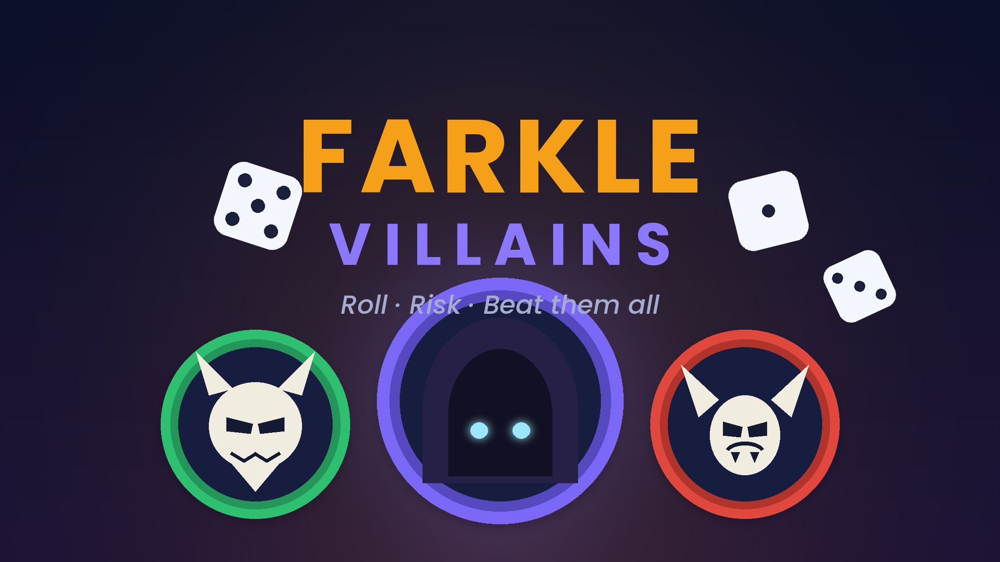

IL PRIMO LANCIO È GIÀ LIVE Disponibile oraFarkle
DADI · STRATEGIA · UN PIZZICO DI CAOS
Farkle
Villains.
Il classico gioco di dadi, con un lato oscuro. Sfida villain con poteri speciali, rischia un altro lancio e trova la tua strategia.
Multiplayer localeAvatar e dadiClassifica cloud
Gratis, con pubblicità e pacchetti opzionali a pagamento.